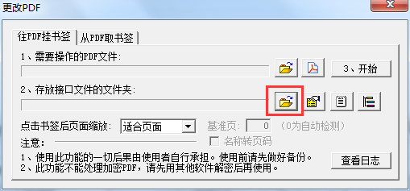
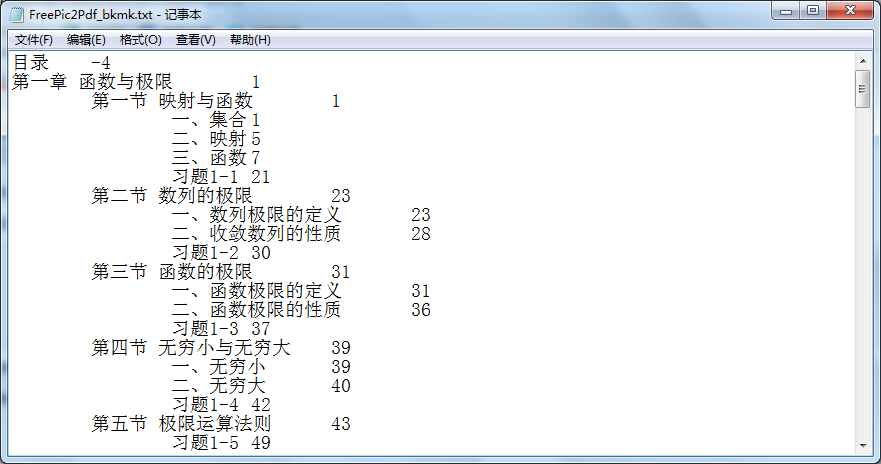
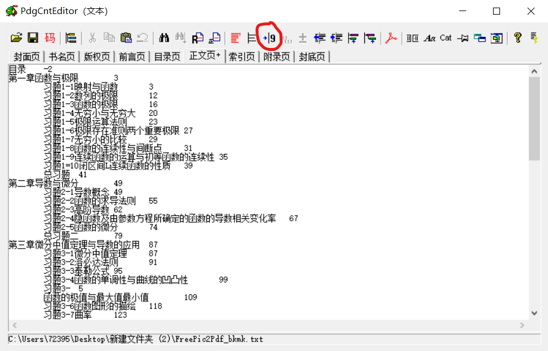
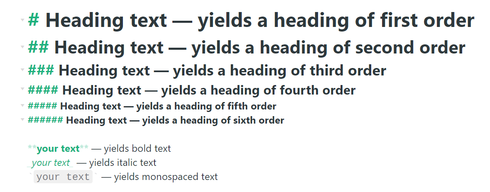
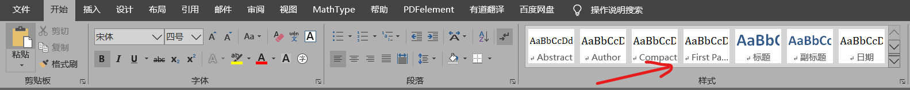
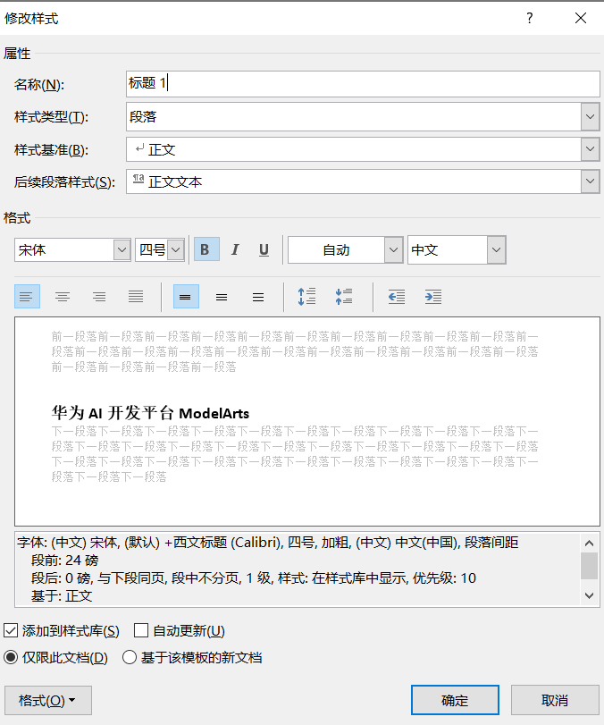

办公软件EXCEL、Word、PPT、PDF¶
md2pdf电子书2——目录与导出pdf¶
Tool工具¶
- summary插件(gitbook的一个插件)
- calibre电子书库管理软件
目录生成步骤¶
summary开源项目¶
REFERENCE¶
使用FreePic2Pdf给pdf书籍添加目录¶
工具Tool¶
- FreePic2Pdf免费软件
- 树洞OCR开源软件（使用了平台API，需要联网使用）
- PdgCntEditor(后加，比VScode编辑目录好用，直接去掉缩进)
步骤¶
先解释一下上述标签的意思：¶
- 往PDF挂书签：就是为pdf文件添加目录。不过需要目录文件，下面会有介绍制作的方式。
- 从PDF取书签：就是从有目录的pdf文件中提取出目录文件。
- 需要操作的目录文件：就是需要添加目录的PDF文件。
- 存放接口的文件夹：就是目录文件，需要制作。

1. 选择一个存放接口的文件夹¶
2. 创建配置文件¶
 * 在新建右方找到新建配置文件选项 * 复制如下代码到新建的配置文件中
1 2 3 4 5 6 7 8 9 10 11 12 13 14 15 16 17 | [Images] [Font] Language=GBK FontSize=7 Margin=0.5 [Bkmk] File=FreePic2Pdf_bkmk.txt AddAsText=0 ShowBkmk=1 ShowAll=1 BasePage=1 [Main] ContentsPage= TextPage= |
3. 创建目录文件¶
在这个文件夹下新建一个 FreePic2Pdf_bkmk.txt 文件。 * 注意：文件名必须为这个
这个文件就是目录文件，这里的目录需要自定义，它需要按照一定的格式:
1 2 3 4 | 一级目录\t页码 \t二级目录\t页码 \t\t三级目录\t页码 。。。(以此类推) |

Note
目录的页码是pdf文件的真实页码，而不是书上标志的那些页码，为了方便，可以将接口文件中 BasePage 字段修改为书中第一页对应的pdf页数。如：BasePage=12
Note
注意在开始前要对pdf备份，可能因为操作不当而损坏重要文件
后记：
- 这种方法对OCR识别的目录来说并不友好，需要手动操作过多
- pic2pdf软件的目录文件，对缩进的要求极高必须是制表符而非四个空格
- 可以在Vscode右下角选择空格，改变缩进方式为“使用Tab缩进”
- 并且只能有一个制表符，多了不能识别
-
PdgCntEditor软件来编辑目录是最为合适的，图中红圈即为“自动切分页码”，这将把多余缩进删去 
-
对编码要求，选择是GBK就必须将目录文件保存为GBK，而不是UTF-8，这在VScode右下角可以更改
- 如果是乱码，千万不要选择通过编码重新保存，而是选择通过编码打开，他们是不同的。
Note
VScode中通过编码打开与通过编码保存的区别：通过编码保存是默认当前编码正确而转换代码的。通过编码重新打开则是改变一种读取方式。为了避免操作错误而导致文件损坏，保险的做法是：无论如何先选择通过编码打开，再选择通过编码保存（如果需要的话）
- 先选择
通过编码打开，再选择通过编码保存（如果需要的话） - 先选择
通过编码打开，再选择通过编码保存（如果需要的话） - 先选择
通过编码打开，再选择通过编码保存（如果需要的话）
正则表达式小手册

简书——PDF 能一键生成书签，PdgCntEditor了解一下~
从Zettlr/pandoc导出为word时的样式选择¶
实际上,Zettlr使用pandoc转换文件格式为docx，所以下面都是对pandoc的配置
步骤1 创建reference.docx样式文件¶
可以生成如下的md文件

在zettlr中转为word，或者直接用盘doc命令：
1 | pandoc m.md -o reference.docx |
步骤2 更改docx中的样式¶
在docx中更改样式，注意不是直接修改，需要在菜单栏->开始->样式中右键修改

右键修改：

步骤三 pandoc使用模板导出¶
使用命令
1 | >pandoc "a.md" --reference-doc reference.docx -f markdown -o "a.docx" |
或者将reference.docx直接放在特定文件夹中(pandoc目录可能需要新建)：
1 | %userprofile%/AppData/Roaming/pandoc |
如果是放入了pandoc目录，则最后直接使用命令即可，默认使用这一模板
REFERENCE¶
【配置了doc样式】markdown + pandoc 生成 docx / pdf
md2pdf电子书——使用Gitbook¶
Tool工具¶
- gitbook（基于Node.js）
- calibre电子书库管理软件
步骤¶
GitBook 准备工作¶
- 安装 Node.js
GitBook 是一个基于 Node.js 的命令行工具，百度在官网下载安装 Node.js，安装完成之后，你可以使用下面的命令来检验是否安装成功。
1 2 | $ node -v v7.7.1 |
- 安装 GitBook
输入下面的命令来安装 GitBook。
1 | $ npm install gitbook-cli -g |
安装完成之后，你可以使用下面的命令来检验是否安装成功。
1 2 3 | $ gitbook -V CLI version: 2.3.2 GitBook version: 3.2.3 |
先睹为快——运行gitbook¶
GitBook 准备工作做好之后，我们进入一个你要写书的目录，输入如下命令。
1 2 3 4 5 | $ gitbook init
warn: no summary file in this book
info: create README.md
info: create SUMMARY.md
info: initialization is finished
|
可以看到他会创建 README.md 和 SUMMARY.md 这两个文件，README.md 应该不陌生，就是说明文档，而 SUMMARY.md 其实就是书的章节目录，其默认内容如下所示：
1 2 | ## Summary * [Introduction](README.md) |
接下来，我们输入 $ gitbook serve 命令，然后在浏览器地址栏中输入 http://localhost:4000 便可预览书籍！
更进一步¶
SUMMARY.md¶
这个文件主要决定 GitBook 的章节目录，它通过 Markdown 中的列表语法来表示文件的父子关系，下面是一个简单的示例：
1 2 3 4 5 6 7 8 9 | ## Summary * [Introduction](README.md) * [Part I](part1/README.md) * [Writing is nice](part1/writing.md) * [GitBook is nice](part1/gitbook.md) * [Part II](part2/README.md) * [We love feedback](part2/feedback_please.md) * [Better tools for authors](part2/better_tools.md) |
插件¶
GitBook 有 插件官网，默认带有 5 个插件，highlight、search、sharing、font-settings、livereload，如果要去除自带的插件,可以在插件名称前面加 -，比如：
1 2 3 | "plugins": [ "-search" ] |
如果要配置使用的插件可以在 book.json 文件中加入即可，比如我们添加 plugin-github，我们在 book.json 中加入配置如下即可：
1 2 3 4 5 6 7 8 | { "plugins": [ "github" ], "pluginsConfig": { "github": { "url": "https://github.com/your/repo" } } } |
然后在终端输入 gitbook install ./ 即可。
- 如果要指定插件的版本可以使用 plugin@0.3.1，因为一些插件可能不会随着 GitBook 版本的升级而升级。
REFERENCE¶
GitBook 使用教程@简书 作者：Blankj
https://www.jianshu.com/p/421cc442f06c
Excel电子表格使用记录¶
统计小于某一值的数据个数¶
- 这是在四级成绩统计时计算出未通过人数的函数：
1 | COUNTIF(A1:A15,"<425") |